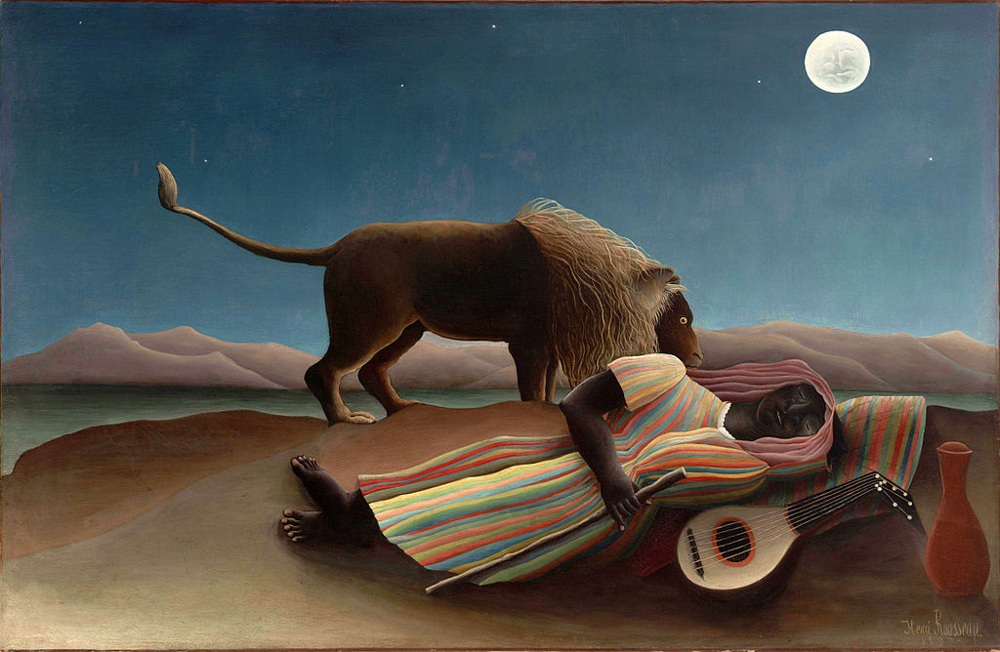

<head>
<meta charset="UTF-8" />
<meta name="keywords" content="drawing, painting" />
<meta name="description" content="drawings by Sunjy" />
<title>Sunjy</title>
<link rel="shortcut icon" type="image/x-icon" href="../../mImages/mCommon/favicon.ico" media="screen" />
<link rel="stylesheet" type="text/css" href="../../mCsses/mCommon/mCssA.css" />
<link rel="stylesheet" type="text/css" href="../../mCsses/mCommon/mCssB.css" />
<link rel="stylesheet" type="text/css" href="../../mCsses/mCommon/mCssC.css" />
<link rel="stylesheet" type="text/css" href="../../mCsses/mCommon/mCssD.css" />
<link rel="stylesheet" type="text/css" href="../../mCsses/mContent/mCssA.css" />
<link rel="stylesheet" type="text/css" href="../../mCsses/mContent/mCssB.css" />
<link rel="stylesheet" type="text/css" href="../../mCsses/mContent/mCssC.css" />
<link rel="stylesheet" type="text/css" href="../../mCsses/mContent/mCssD.css" />
</head>
<script type="text/javascript" src="../../mScripts/mContent/mContentAA.js" /></script>
<script type="text/javascript" src="../../mScripts/mContent/mContentAB.js" /></script>
<script type="text/javascript" src="../../mScripts/mContent/mContentAC.js" /></script>
<script type="text/javascript" src="../../mScripts/mContent/mContentAD.js" /></script>
<script type="text/javascript"></script> 
<script type="text/javascript">
document.write('<div class="mImgAbsolute"></div>');
/*
document.write('<p class="mFontSizeBColor" />From a white paper...</p>');
document.write('<table class="center"><tr><td>');
document.write('');
document.write('</td></tr></table>');
*/
</script>


<script type="text/javascript">
document.write('<p class="mFontSizeBColor" />The Sleeping Gypsy</p>');
document.write('<p class="mFontSizeSColor" />The Sleeping Gypsy by Henri Rousseau is a fantasy depiction of a lion musing over a sleeping woman on a moonlit night.<br><br>Rousseau portrayed an African Gypsy in a desert wearing a colorful costume, sleeping in the desert with an Italian stringed instrument, and a jar of water.<br><br>This painting has several elements from different cultures, and Rousseau has mixed them all into a unique image.<br><br>Rousseau described his painting as:<br><br>“A wandering Negress, a mandolin player, laid down with her jar beside her and overcome by fatigue in a deep sleep. A lion chance to pass by picks up her scent yet does not devour her. There is a moonlight effect, very poetic.”<br></p>');
document.write('<table class="center" /><tr><td>');
document.write('<br>Rousseau portrayed an African Gypsy in a desert wearing a colorful costume, sleeping in the desert with an Italian stringed instrument, and a jar of water.<br><br>This painting has several elements from different cultures, and Rousseau has mixed them all into a unique image.<br><br>Rousseau described his painting as:<br><br>“A wandering Negress, a mandolin player, laid down with her jar beside her and overcome by fatigue in a deep sleep. A lion chance to pass by picks up her scent yet does not devour her. There is a moonlight effect, very poetic.”<br>" />');
document.write('</td></tr></table>');
</script>


